Inicio rápido de Confluent Cloud
Confluent Cloud es una plataforma de streaming de datos completamente gestionada y nativa en la nube, basada en Apache Kafka®. Esta guía rápida te ayuda a comenzar a transmitir datos mostrándote cómo crear un clúster, agregar un tópico y producir datos.
¿Por qué usar Confluent Cloud en lugar de administrar Kafka por tu cuenta?
Confluent Cloud elimina la complejidad operativa de Kafka con:
- Escalado automático y confiabilidad
- Seguridad, monitoreo y gestión de esquemas integrados
- Menor costo total de propiedad y desarrollo más rápido
La página Home de la consola
Al iniciar sesión en Confluent Cloud, la página Home muestra widgets para volver a los recursos que más utilizás y para monitorear tus entornos:
| Widget | Descripción |
|---|---|
| Resumen de recursos | Muestra cuántos entornos, clústeres, tópicos, conectores, cluster links, compute pools y SQL workspaces tenés. Seleccioná un tipo de recurso para ir a su lista. |
| Acción requerida | Lista los recursos que necesitan tu atención, como recursos inactivos. Seleccioná View all para ver la lista completa. |
| Favoritos | Lista los recursos que marcaste como favoritos (entornos, clústeres, tópicos o conectores) para volver a ellos directamente desde Home. Para agregar un favorito, seleccioná Add favorite, buscá y elegí el recurso. Para quitarlo, seleccioná Edit y luego Remove from favorites. |
| Visitados recientemente | Lista los recursos a los que accediste más recientemente, con el tiempo transcurrido desde la visita. Seleccioná View all para buscar en todo tu historial. |
| Descubrir datos | Muestra los tópicos creados recientemente en un entorno seleccionado. Seleccioná Explore more para explorar tus datos en Data Portal. |
| Data health score | Muestra una puntuación basada en cuántos de tus tópicos tienen un esquema registrado, y lista los tópicos que no lo tienen. |
| Blogs | Muestra publicaciones recientes del blog de Confluent. |
img/cc-00-home.png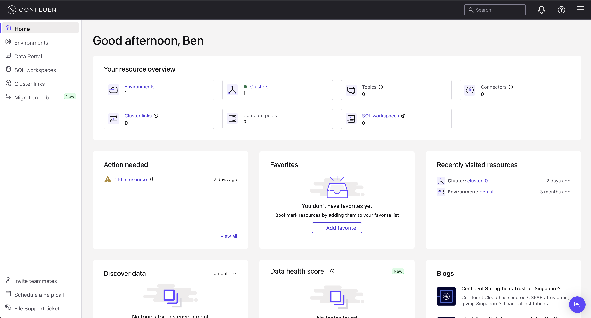
Consideraciones antes de comenzar
- Esta guía rápida te pone en marcha con Confluent Cloud usando un clúster Kafka básico.
- La primera sección muestra cómo usar Confluent Cloud para crear tópicos, y producir y consumir datos hacia y desde el clúster.
- La segunda sección te guía en el uso de Confluent Cloud para Apache Flink® para ejecutar consultas sobre los datos usando sintaxis SQL.
- Los flujos de trabajo asumen que ya contás con un entorno de Confluent Cloud funcionando, que incluye un paquete de Stream Governance.
- Confluent Cloud ofrece una interfaz web, una interfaz de línea de comandos local y APIs REST para administrar tus entornos y recursos.
Prerrequisitos
- Acceso a Confluent Cloud. Para comenzar de forma gratuita, registrate en la prueba gratuita de Confluent Cloud.
- Conectividad a Internet
- Paquete de Stream Governance
Sección 1: Crear un clúster y agregar un tópico
Esta sección configura un clúster Kafka en Confluent Cloud y muestra cómo producir datos hacia un tópico usando la consola web.
Paso 1 Crear un clúster Kafka en Confluent Cloud
En este paso creás y lanzás un clúster Kafka básico dentro de tu entorno por defecto.
- Iniciá sesión en Confluent Cloud en confluent.cloud.
- Hacé clic en + Add cluster.
- En la página Create cluster, especificá un nombre para el clúster.
- En Cluster type, seleccioná Basic.
img/cc-01a-create-cluster.png
Este ejemplo crea un clúster Kafka Basic, que soporta disponibilidad en zona única. Para información sobre otros tipos de clúster, consultá la documentación de tipos de clúster de Confluent Cloud.
- En Provider and region, seleccioná un proveedor de nube y una región.
- Revisá el resumen de costos y seleccioná Launch cluster.
Si no configuraste un método de pago, agregá uno o ingresá un código promocional antes de poder lanzar el clúster.
Después de que tu clúster se aprovisione, se muestra la página Cluster Overview. El tiempo de aprovisionamiento varía según el proveedor de nube y puede tardar algunos minutos.
img/cc-01b-cluster-overview.png
Ahora podés configurar aplicaciones y datos en tu nuevo clúster.
Paso 2 Crear un tópico Kafka
Un tópico es un log ordenado e inmutable de mensajes. Los productores escriben al final y los consumidores leen desde cualquier posición usando un offset. Se divide en particiones para paralelizar la carga entre brokers, y cada partición puede replicarse para garantizar durabilidad.
En este paso creás un tópico Kafka llamado users usando la consola web.
- En el menú de navegación, hacé clic en Topics y luego en Create topic.
- En el campo Topic name, escribí
usersy seleccioná Create with defaults.
usersCampo Topic name y botón Create with defaults.img/cc-02-create-topic.png
El tópico users queda creado en el clúster Kafka y disponible para productores y consumidores.
El mensaje de éxito puede sugerirte realizar una acción; continuá con el Paso 3: Crear un productor de ejemplo.
Paso 3 Crear un productor de ejemplo
Schema Registry almacena y versiona los esquemas de los mensajes de Kafka. En Confluent Cloud, cuando el conector Datagen produce datos con el formato JSON_SR, registra automáticamente el esquema del tópico en Schema Registry. Esto garantiza que productores y consumidores acuerden el formato de los datos.
Un conector es un componente enchufable que transmite datos hacia o desde Kafka. Este paso usa el conector Datagen Source alojado en Confluent Cloud para producir datos de ejemplo hacia el tópico users.
- En el menú de navegación, seleccioná Connectors.
- En el cuadro de búsqueda, escribí
datagen. - En los resultados, seleccioná el conector Datagen Source.
img/cc-03a-datagen-search.png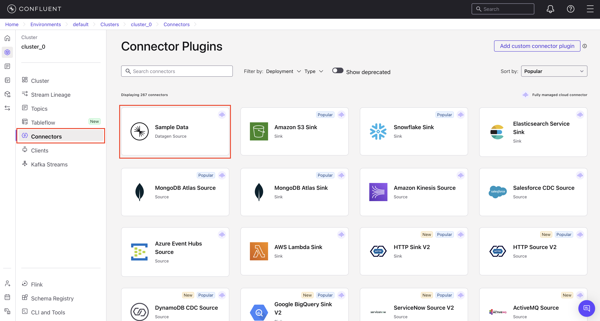
Si aparece el cuadro Launch Sample Data, seleccioná Additional configuration.
- En el diálogo Launch Sample Data, seleccioná la plantilla Users y hacé clic en Additional configuration.
- En el diálogo de selección de tópico, seleccioná el tópico
usersy hacé clic en Continue. - En el diálogo de credenciales Kafka, seleccioná My account y hacé clic en Generate API key & download, luego en Continue.
Esto crea una API key y un secret que permiten al conector acceder a tu clúster, y los descarga a tu computadora. Una API key aplica al clúster Kafka activo — si agregás un nuevo clúster, debés crear una nueva API key.
- En la página Configuration, seleccioná JSON_SR para el formato del valor de salida, seleccioná la plantilla Users y hacé clic en Continue.
- Para el tamaño del conector, dejá el slider en el valor por defecto de 1 tarea y hacé clic en Continue.
- En la página Review and launch, reemplazá el nombre del conector por
DatagenSourceConnector_users. - Hacé clic en Continue para iniciar el conector.
El estado del nuevo conector debería mostrar Provisioning por unos segundos. Cuando el estado cambie a Running, el conector está produciendo datos hacia el tópico users.
DatagenSourceConnector_users.img/cc-03b-connector-running.png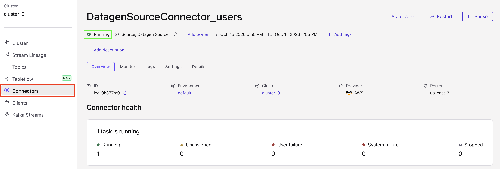
Paso 4 Ver los mensajes
Tu nuevo tópico users ya está recibiendo mensajes. Usá la consola de Confluent Cloud para ver los datos.
- En el menú de navegación, seleccioná Topics para mostrar la lista de tópicos de tu clúster.
- Seleccioná el tópico
users. - En la página de detalle del tópico
users, seleccioná Messages para ver los mensajes que se están produciendo.
img/cc-04-messages.png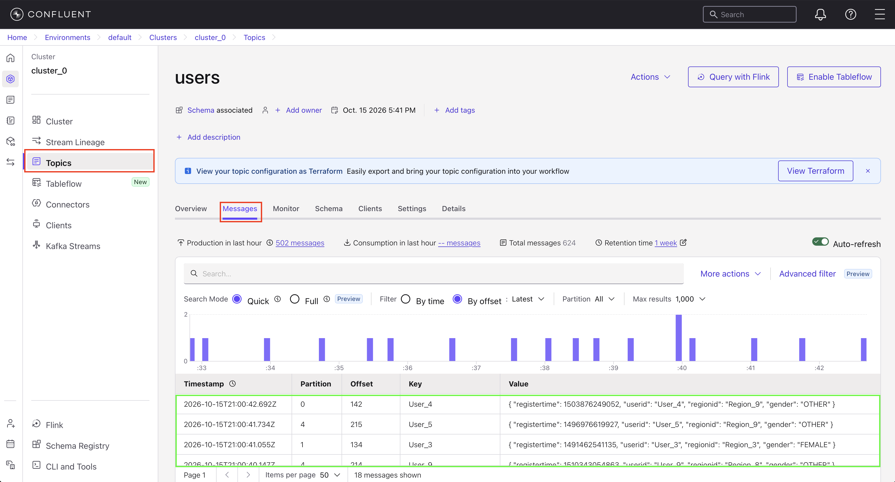
Paso 5 Ver el esquema del tópico
Cuando el conector del Paso 3 produce datos hacia el tópico users, registra automáticamente un esquema en Schema Registry. El esquema mantiene los datos consistentes y compatibles a medida que las aplicaciones evolucionan.
- En el menú de navegación, seleccioná Topics y luego el tópico
users. - En la página de detalle del tópico, hacé clic en Schema para ver el esquema registrado.
El esquema lista cada campo y su tipo, definiendo la estructura que acuerdan productores y consumidores.
users.img/cc-05-schema.png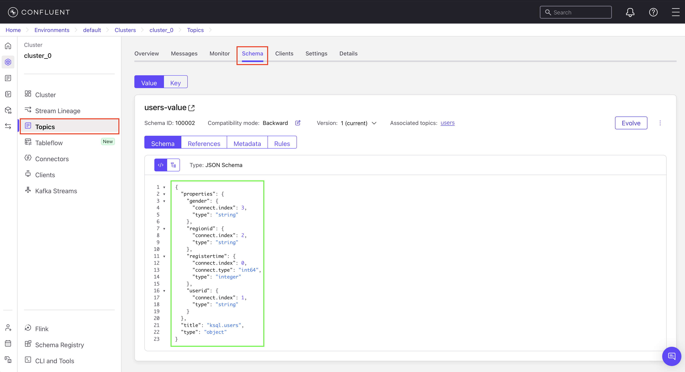
Paso 6 Inspeccionar el flujo de datos
Usá Stream Lineage para rastrear el movimiento de los datos a través de tu clúster.
- Hacé clic en Lineage en el menú de navegación.
- Hacé clic en el nodo DatagenSourceConnector_users. El panel de detalle muestra gráficos de producción total y otros datos.
DatagenSourceConnector_users.img/cc-06a-lineage-connector.png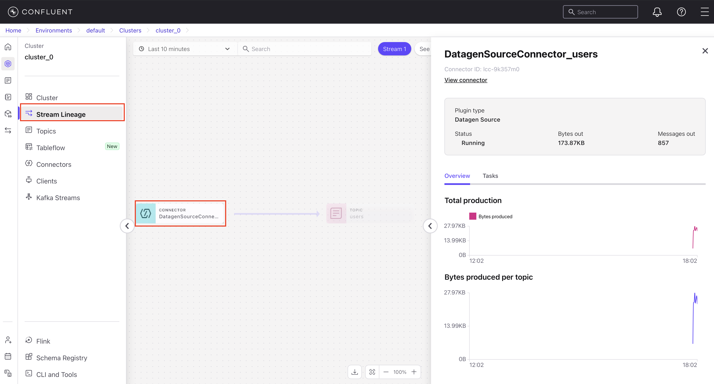
- Cerrá esta vista y seleccioná el nodo del tópico
users. Hacé clic en Overview para ver gráficos de throughput total. Navegá por las demás pestañas para ver más detalles: Schema, Metadata, Messages. - Hacé clic en la flecha en el borde del canvas para volver a abrir el menú de navegación.
users con sus detalles.img/cc-06b-lineage-topic.png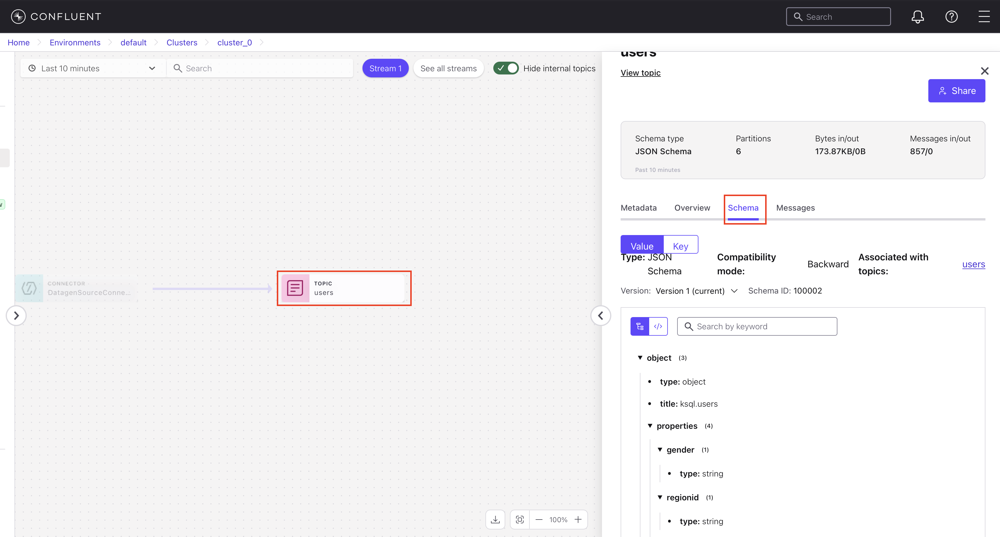
Paso 7 Eliminar recursos Opcional
Si planeás continuar con la Sección 2, saltá este paso. De lo contrario, eliminá los recursos que creaste para evitar cargos inesperados en tu cuenta.
- Eliminar el conector: en el menú de navegación, seleccioná Connectors. Hacé clic en DatagenSourceConnector_users, elegí la pestaña Settings, hacé clic en Delete connector, ingresá el nombre y confirmá.
- Eliminar el tópico: en el menú de navegación, hacé clic en Topics, seleccioná el tópico
users, elegí la pestaña Settings, hacé clic en Delete topic, ingresá el nombre y confirmá. - Eliminar el clúster: en el menú de navegación, seleccioná Cluster, elegí la pestaña Settings, hacé clic en Delete cluster, ingresá el nombre del clúster y confirmá.
Sección 2: Consultar datos de streaming con Flink SQL
Apache Flink® es un motor de procesamiento distribuido para datos en tiempo real. Permite ejecutar transformaciones, agregaciones y joins sobre flujos de datos directamente con Flink SQL. En Confluent Cloud, Flink está integrado con Kafka: los tópicos se exponen como tablas sobre las que se pueden hacer consultas SQL. Una consulta SELECT devuelve resultados continuos a medida que llegan mensajes nuevos; un INSERT INTO materializa el resultado en otro tópico.
En esta sección creás un workspace de Flink y escribís consultas sobre el tópico users que creaste en la Sección 1.
Paso 1 Crear un workspace de Flink
Un workspace de Flink es un editor SQL interactivo para escribir y ejecutar consultas sobre datos de streaming.
- En el menú de navegación, hacé clic en Stream processing.
- En el dropdown, seleccioná el entorno donde creaste el tópico
usersy el conector Datagen Source. - Hacé clic en Create workspace.
Para experimentar con flujos de datos de ejemplo, hacé clic en Try example para abrir un workspace curado con consultas Flink SQL de ejemplo listas para ejecutar.
Se abre un nuevo workspace con una consulta de ejemplo en el editor de código. En segundo plano, Confluent Cloud crea un compute pool con los recursos necesarios para ejecutar tus sentencias SQL. Puede tardar un minuto o dos en aprovisionarse — el estado se muestra en la esquina superior derecha del workspace.
img/cc-10-flink-workspace.png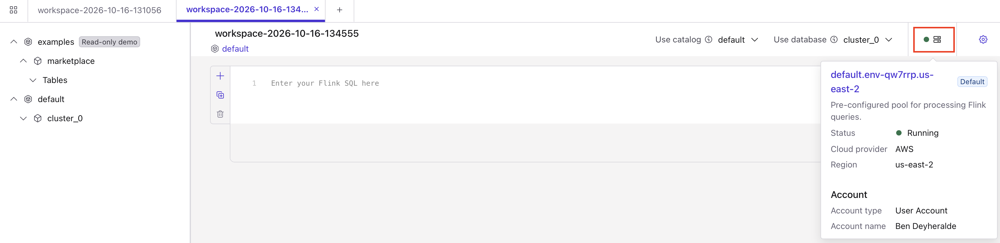
Paso 2 Ejecutar sentencias Flink SQL
El compute pool está listo para ejecutar consultas cuando su estado cambia de Provisioning a Running.
- Hacé clic en Run para enviar la consulta de ejemplo. Los resultados se muestran debajo de la celda. La salida debería ser similar a:
EXPR$0 0 1 2
- Borrá la consulta anterior de la celda y ejecutá la siguiente para inspeccionar el stream
users. Confluent Cloud registra tablas automáticamente sobre tus tópicos Kafka — la consulta corre contra la tablauserscon los datos del tópico subyacente.
SELECT * FROM users;
La salida debería ser similar a:
key registertime userid regionid gender x'557365725f34' 1502088104187 User_4 Region_1 MALE x'557365725f32' 1500243991207 User_2 Region_9 FEMALE x'557365725f32' 1497969328414 User_2 Region_9 OTHER ...
SELECT * FROM usersFilas del tópico users en tiempo real.img/cc-11-select-users.png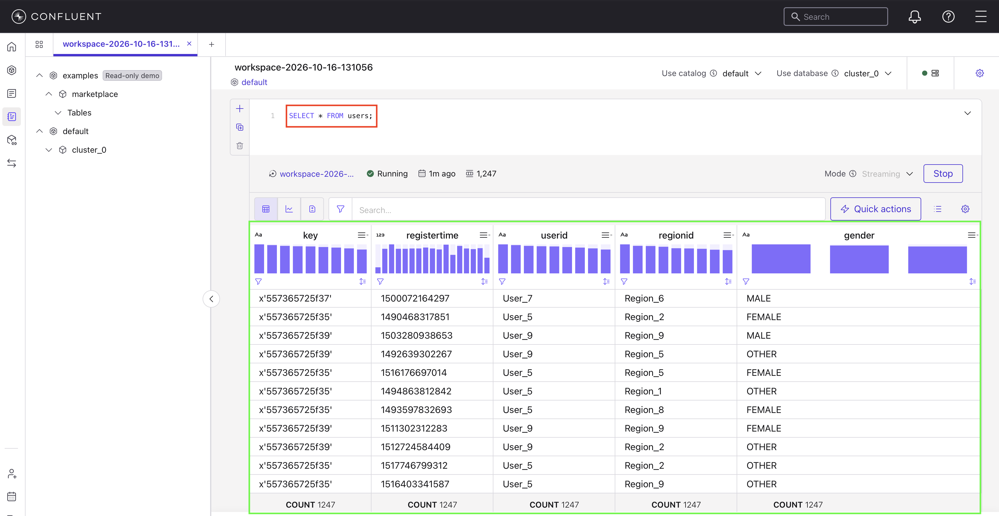
- Hacé clic en Stop para finalizar la consulta. Los datos siguen fluyendo desde el conector Datagen hacia la tabla
usersaunque la consulta SELECT esté detenida.
Paso 3 Enmascarar un campo
En este paso ejecutás una sentencia Flink SQL para ocultar información personal en el stream users y publicar los datos depurados en un nuevo tópico Kafka llamado users_mask.
- Ejecutá la siguiente sentencia para crear una nueva tabla Flink basada en la tabla
users:
CREATE TABLE users_mask LIKE users;
- Cuando el estado de la sentencia anterior sea Completed, ejecutá la siguiente sentencia para inspeccionar el esquema de la tabla
users_mask:
DESCRIBE users_mask;
La salida debería ser similar a:
+--------------+-----------+----------+------------+ | Column Name | Data Type | Nullable | Extras | +--------------+-----------+----------+------------+ | key | BYTES | NULL | BUCKET KEY | | registertime | BIGINT | NULL | | | userid | STRING | NULL | | | regionid | STRING | NULL | | | gender | STRING | NULL | | +--------------+-----------+----------+------------+
- Ejecutá la siguiente sentencia para iniciar una consulta persistente que usa la función
REGEXP_REPLACEde Flink para enmascarar el campogendery enviar los resultados a la tablausers_mask:
INSERT INTO users_mask SELECT `key`, registertime, userid, regionid, REGEXP_REPLACE(gender, '(\w)', '*') as gender FROM users;
La sentencia INSERT INTO ... SELECT se ejecuta de forma continua hasta que la detengas manualmente.
- Hacé clic en el ícono Add new cell para crear una nueva celda y ejecutá la siguiente sentencia para inspeccionar las filas de
users_mask:
SELECT * FROM users_mask;
La salida debería ser similar a:
key registertime userid regionid gender x'557365725f34' 1488737391835 User_4 Region_5 ***** x'557365725f34' 1499070045309 User_4 Region_5 ***** x'557365725f32' 1505447077187 User_2 Region_7 ***** x'557365725f34' 1505592707164 User_4 Region_2 ***** ...
SELECT * FROM users_maskCampo gender enmascarado con asteriscos.img/cc-12-users-mask.png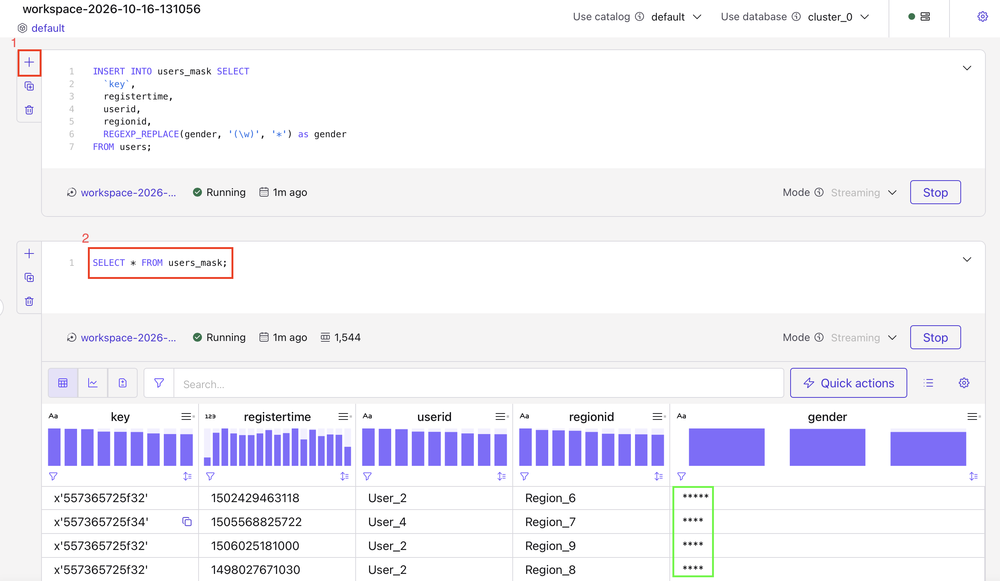
- Hacé clic en Stop para finalizar la sentencia SELECT. La sentencia
INSERT INTOque iniciaste antes continúa enviando datos al tópicousers_mask.
Paso 4 Ver el Stream Lineage
Tus sentencias Flink SQL son recursos en Confluent Cloud, al igual que tópicos y conectores, por lo que podés verlos en Stream Lineage.
- En tu workspace, abrí el navegador de catálogo y expandí tu entorno, clúster y Tables para encontrar el tópico
users_mask. - Pasá el cursor sobre el tópico
users_masky hacé clic en View topic details.
users_mask en el catálogo de tablas.img/cc-13a-catalog-browser.png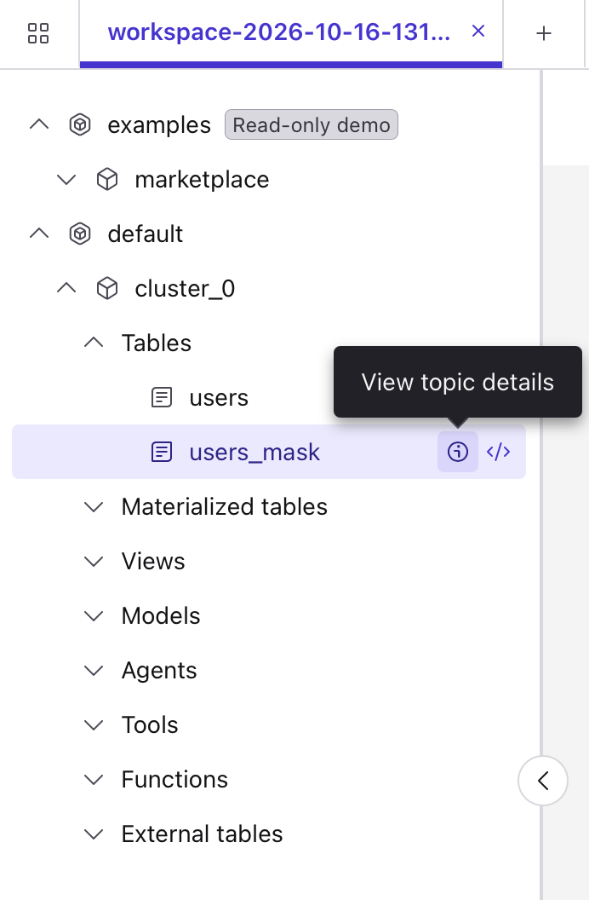
- En el panel de detalles del tópico, bajo Lineage, hacé clic en View full lineage.
- Pasá el cursor sobre los nodos en el diagrama de Stream Lineage para ver los detalles del flujo de datos.
users_mask.img/cc-13b-lineage-flink.png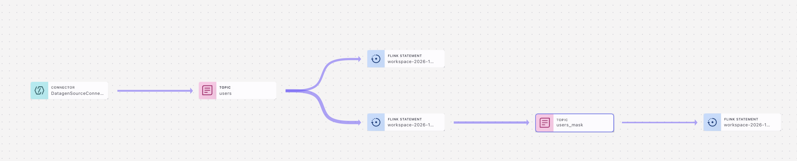
Paso 5 Eliminar recursos
Cuando terminés el laboratorio, eliminá los recursos que creaste para evitar cargos inesperados en tu cuenta.
- Eliminar la consulta persistente: navegá a la página de detalles de tu entorno y hacé clic en Flink. En la lista de sentencias, encontrá la que tiene estado Running. Seleccioná su checkbox, hacé clic en Actions → Delete statement. En el diálogo de confirmación, escribí
DELETEy confirmá. - Eliminar el conector: en el menú de navegación, seleccioná Connectors. Hacé clic en DatagenSourceConnector_users, elegí la pestaña Settings, hacé clic en Delete connector, ingresá el nombre y confirmá.
- Eliminar los tópicos: en el menú de navegación, hacé clic en Topics. Para cada tópico (
usersyusers_mask): seleccioná el tópico, elegí la pestaña Settings, hacé clic en Delete topic, ingresá el nombre y confirmá.